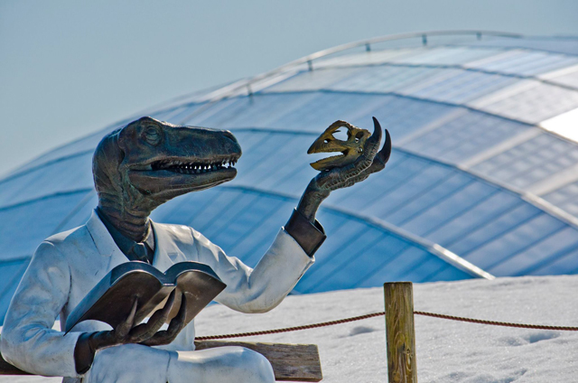
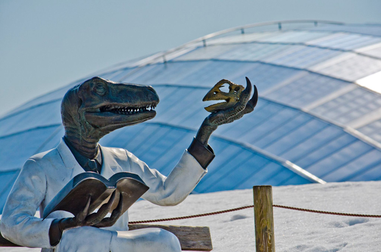

情報１：福井駅前
恐竜で有名な福井県には、駅前にリアルな恐竜がいる。子どもたちに大人気だ。

情報２：歴史
越前の城下町をはじめ、情緒ある街並みを楽しむことができる。蕎麦も絶品。
情報３：博物館
勝山には世界屈指の恐竜博物館がある。子どもだけでなく、大人も楽しめる。

問題１：
青枠内の要素を情報１～情報３のボタン以外は非表示にしてください。
また、これらのボタンをクリックしたときに、その下にあるdivの中の要素（点線枠内）を取得して、div#content（赤枠）内に表示させてください。
恐竜で有名な福井県には、駅前にリアルな恐竜がいる。子どもたちに大人気だ。
越前の城下町をはじめ、情緒ある街並みを楽しむことができる。蕎麦も絶品。
勝山には世界屈指の恐竜博物館がある。子どもだけでなく、大人も楽しめる。
